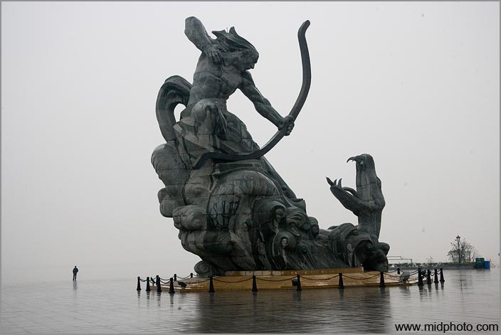
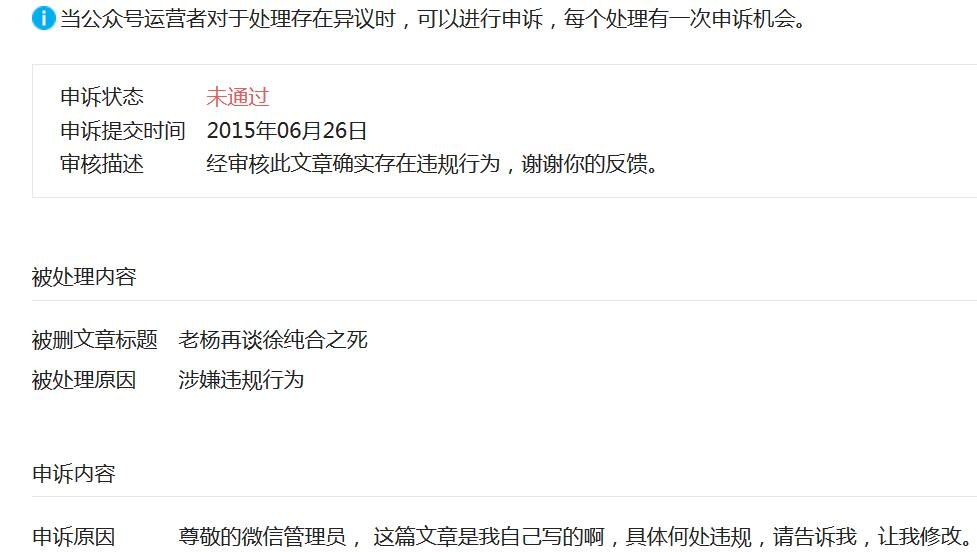

老杨急就章系列（49）
你怎么不动了？
by 长沙杨飞
我经常被新粉丝问，为啥微博几天都不动，公众号一个月也不推送？这事说来话长，主要有三个原因吧。
第一我不想浪费时间。浪费他人的时间与慢性谋杀无异。一些鸡毛蒜皮的事，比如他的早餐吃的啥，狗的午餐吃的啥，对他可能很重要，但对别人基本没有一毛钱关系。假如你的鸡汤确实做得非常好，发一条朋友圈也就够了，但有的人喜欢一口气发几条，图片不过瘾还得加上两条小视频。
还有些朋友很容易被感动，每天都要被各种鸡汤high好几次，他一高潮就得吹出来，憋不住啊。在网络时代，刷屏真不是一个好习惯。对每天发五条以上朋友圈的话唠患者，除了拉黑还真没啥好办法。
在微博粉丝过万，微信朋友过千之后，我尤其注意不轻易发状态。有些只是个人备忘的东西，我注册了一个小号发，尽量不影响大家。
更新很慢的第二个原因是很多文字发不出去。微博有自动过滤功能，它莫名其妙就把我的很多文字直接送进草稿箱。有时改了几次发出去了，依然逃不过人工审核。快的半小时，慢的一两天，照样干掉你。

有好几种干掉的方法，最常见的就是删帖：背后突然伸出一只大手，直接删了你这条。这种方法简单粗暴但最有效。第二种方法是设置某条只有作者自己可见，粉丝们都看不见。这也是微信朋友圈常见的屏蔽法。第三种是粉丝们能看见，但不能转发。没了转发微博还玩个啥？
前两年有一个规避管制的方法不错，那就是把文字转换为长图。但最近这方法日渐失效了。有关部门使用了某种图片识别黑科技，一些不合时宜的图片都发不出去了。
我很少更新微博微信的第三个原因在于没有安全感。任何微信公众号和微博账号都随时可能消失，不予解释并且投诉无门。上个月我的朋友楊康令的微博账号就突然没了。他是一个勤奋的博主，几年努力下来粉丝已近十万，说没就没了。微信公众号也是一样，你辛辛苦苦好不容易积攒数千订户，突然就莫名其妙账号不存在。大户小户都是一样，野狼大势、鹏媒体这种几十万订户的公众号，都是突然人间蒸发。
对于随时可能死亡的东西，都不值得去花时间经营。我开设了非死不可和twitter账户，欢迎大家关注。目前我主要把作品放在个人网站“杨飞摄影”上，它的服务器在英国，国内访问虽然慢点，但是稳定，只要每年交钱，内容就会一直在。话说回来，内容和域名均在外国，并不是说本县政府就管不着。最近我有几篇文章，比如研究为啥谷歌不能访问这篇，因为访问量太大，也被点杀了（封文章的IP地址），现在要看的话只能爬墙。但这里我还是要感谢县政府宽大处理，目前我的网站还没有全部404。
大多数几十万粉丝几十万订户的账号都不是一天得来的，要靠多年的打拼以及团队合作。如果计算商业价值，这些大号都能价值几十万，就这么突然被消失，
此种霸王行为真的让人难以接受。我的朋友杨康令曾多次致电新浪微博客服，但啥用也没有，小秘书的回答可以总结为四个字：无可奉告。
微信公众号的管理现在也日趋严格。上个月我连续三次推送都被打回，说违反相关政策和法律。至于具体违反了啥政策或哪一条法律，对不起就不告诉你。微信公众号“野狼大势”的编辑也说他们一直做得好好的，就因为《节节败退的中产阶级》一篇文章被删帖销号，多年的投入成了泡影。现在做自媒体和公众号真的很难，某篇文章阅读量大涨也不要高兴太早，不知道啥时候就会触动有关部门的G点，然后一巴掌拍死你。
微博和公众号人间蒸发，实体出版也好不了多少，一言不合你的杂志社编辑部就能被人占领。去投诉吧，没人管。去法院吧，不受理。现在风声紧，这事就不多说了。
理论上来说，微信和微博被删或账号消失都是可以申诉的。我以前也申诉过几次，但从来没成功过。我很想知道具体违反了哪条政策或法律，但是小秘书的回信等于没说：
你确实违规了，谢谢你的反馈。

关注老杨作品：
1，杨飞摄影 www.midphoto.com
2，微信：yangfei789288
3，微信公众号@长沙杨飞
4，新浪微博@长沙杨飞
5，推特Twitter@feiyang17
6，Facebook：yangfei999999@hotmail.com